Changes in PRIMAP-hist v2.6.1_final compared to v2.6_final for Togo
2025-03-19
Johannes Gütschow
Change analysis for Togo for PRIMAP-hist v2.6.1_final compared to v2.6_final
Overview over emissions by sector and gas
The following figures show the aggregate national total emissions excluding LULUCF AR6GWP100 for the country reported priority scenario. The dotted linesshow the v2.6_final data.

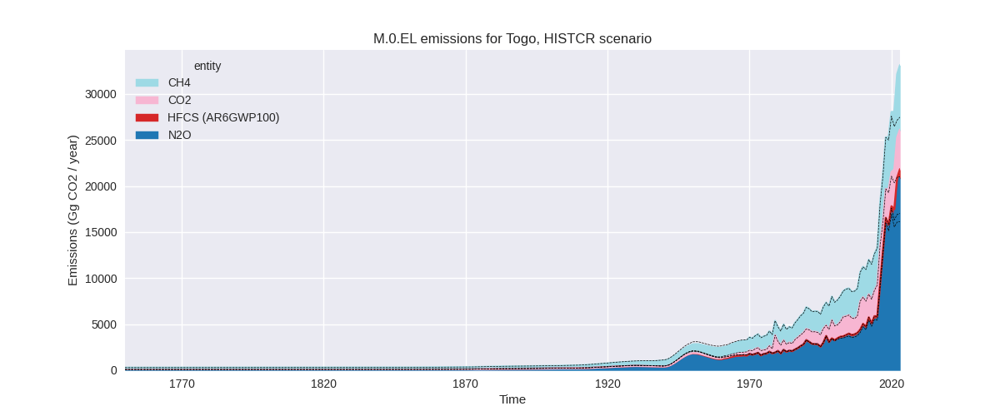
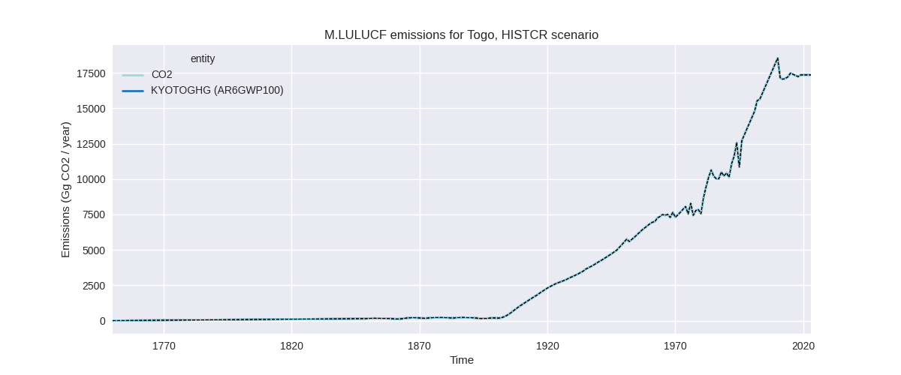
The following figures show the aggregate national total emissions excluding LULUCF AR6GWP100 for the third party priority scenario. The dotted linesshow the v2.6_final data.
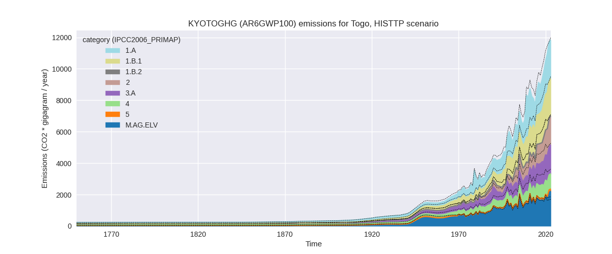
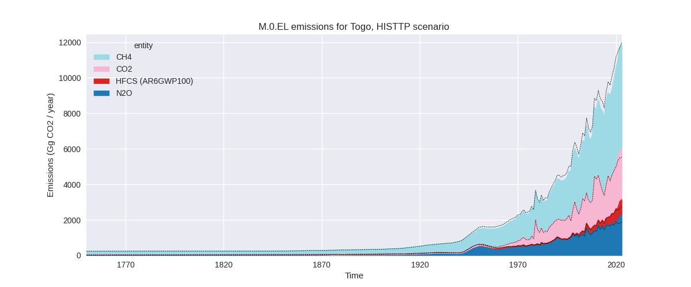
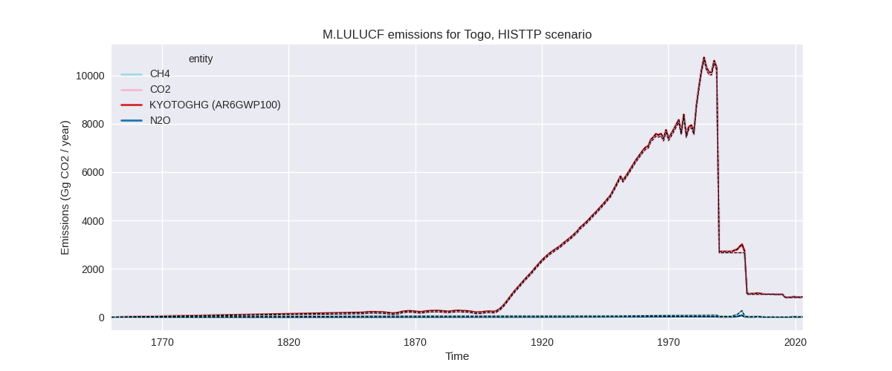
Overview over changes
In the country reported priority scenario we have the following changes for aggregate Kyoto GHG and national total emissions excluding LULUCF (M.0.EL):
- Emissions in 2023 have changed by 20.5%% (5637.69 Gg CO2 / year)
- Emissions in 1990-2023 have changed by 3.1%% (388.46 Gg CO2 / year)
In the third party priority scenario we have the following changes for aggregate Kyoto GHG and national total emissions excluding LULUCF (M.0.EL):
- Emissions in 2023 have changed by -1.2%% (-142.97 Gg CO2 / year)
- Emissions in 1990-2023 have changed by -5.8%% (-444.05 Gg CO2 / year)
Most important changes per scenario and time frame
In the country reported priority scenario the following sector-gas combinations have the highest absolute impact on national total KyotoGHG (AR6GWP100) emissions in 2023 (top 5):
- 1: M.AG.ELV, N2O with 4857.22 Gg CO2 / year (31.4%)
- 2: M.AG.ELV, CH4 with 365.07 Gg CO2 / year (23.6%)
- 3: 2, CO2 with 327.11 Gg CO2 / year (23.9%)
- 4: 3.A, CH4 with 199.29 Gg CO2 / year (13.1%)
- 5: 1.B.1, CH4 with -57.04 Gg CO2 / year (-2.4%)
In the country reported priority scenario the following sector-gas combinations have the highest absolute impact on national total KyotoGHG (AR6GWP100) emissions in 1990-2023 (top 5):
- 1: M.AG.ELV, N2O with 300.71 Gg CO2 / year (5.1%)
- 2: 2, CO2 with 48.98 Gg CO2 / year (7.2%)
- 3: M.AG.ELV, CH4 with 24.67 Gg CO2 / year (4.0%)
- 4: 3.A, CH4 with 14.89 Gg CO2 / year (1.6%)
- 5: 5, N2O with -1.19 Gg CO2 / year (-1.0%)
In the third party priority scenario the following sector-gas combinations have the highest absolute impact on national total KyotoGHG (AR6GWP100) emissions in 2023 (top 5):
- 1: 4, CH4 with -777.95 Gg CO2 / year (-46.9%)
- 2: M.AG.ELV, N2O with 433.78 Gg CO2 / year (32.5%)
- 3: 3.A, CH4 with 196.52 Gg CO2 / year (13.1%)
- 4: M.AG.ELV, CH4 with 84.64 Gg CO2 / year (23.6%)
- 5: 1.B.1, CH4 with -57.04 Gg CO2 / year (-2.4%)
In the third party priority scenario the following sector-gas combinations have the highest absolute impact on national total KyotoGHG (AR6GWP100) emissions in 1990-2023 (top 5):
- 1: 4, CH4 with -487.65 Gg CO2 / year (-46.5%)
- 2: M.AG.ELV, N2O with 27.76 Gg CO2 / year (2.7%)
- 3: 3.A, CH4 with 14.69 Gg CO2 / year (1.6%)
- 4: M.AG.ELV, CH4 with 4.54 Gg CO2 / year (1.1%)
- 5: 2, CO2 with -2.07 Gg CO2 / year (-0.3%)
Notes on data changes
Here we list notes explaining important emissions changes for the country.
- No new country reported data has been included
- The most important changes in the CR time-series are in the agricultural sector from updated FAO data where new data for 2022 replaces numerical extrapolation. Because of the high fluctuation especially in M.AG.ELV the extrapolation has a high uncertainty and did not model the increase in emissions for 2022 that the FAO data shows.
- For livestock (3.A) CH4 emissions old FAO data showed declining emissions for the last years, while the new FAO data shows increasing emissions.
- In the TP scenario the changes are for similar sectors with the addition of a high reduction of waste CH4 emissions from EDGAR data.
Changes by sector and gas
For each scenario and time frame the changes are displayed for all individual sectors and all individual gases. In the sector plot we use aggregate Kyoto GHGs in AR6GWP100. In the gas plot we usenational total emissions without LULUCF.
country reported scenario
2023
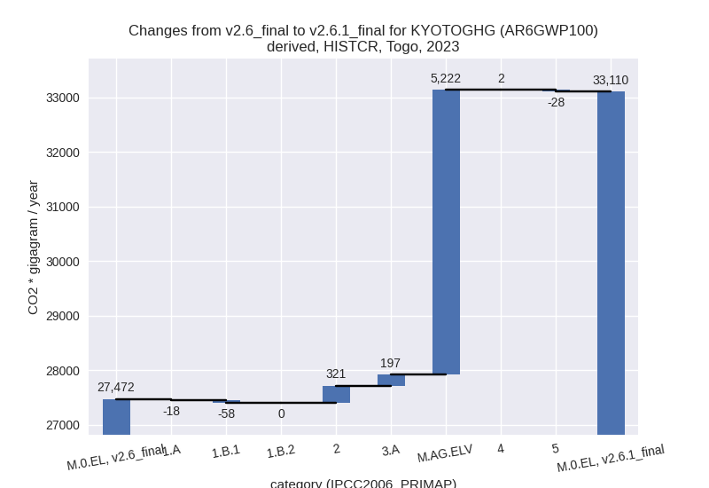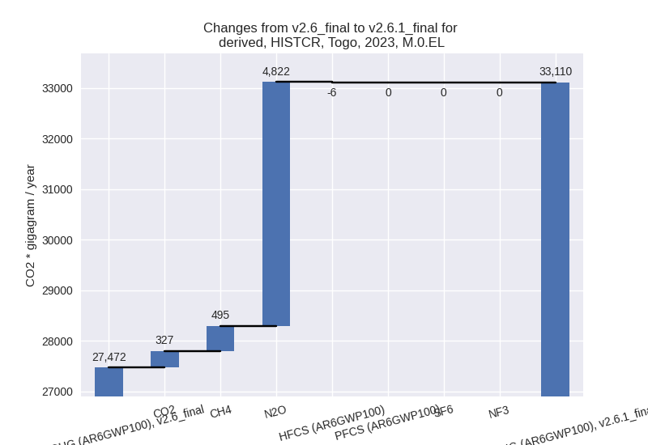
1990-2023
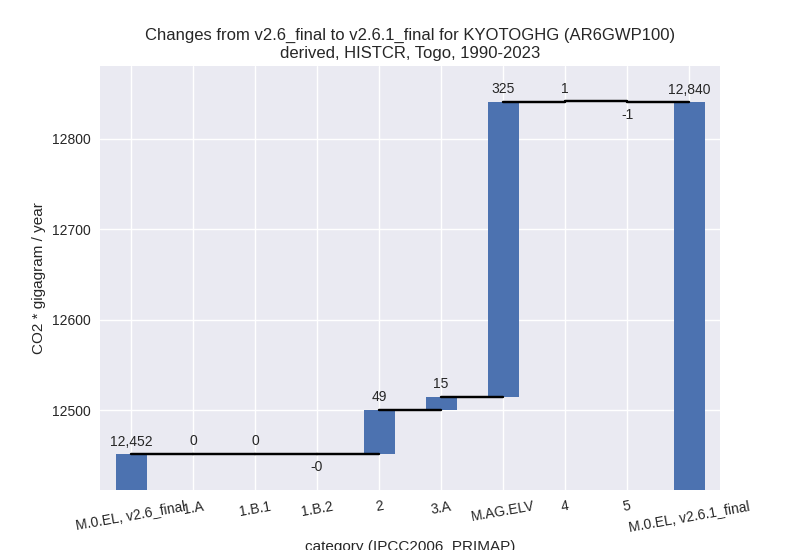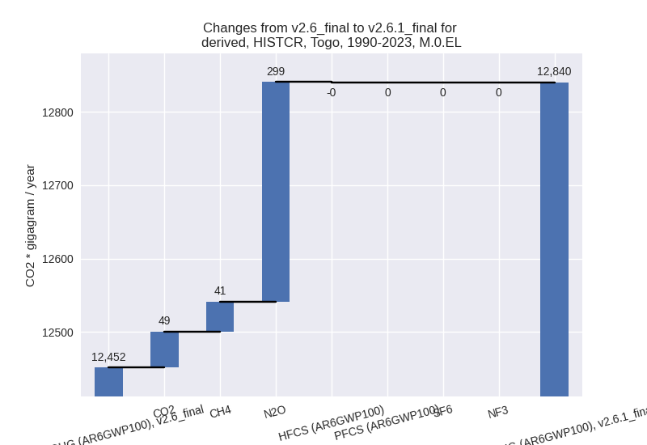
third party scenario
2023
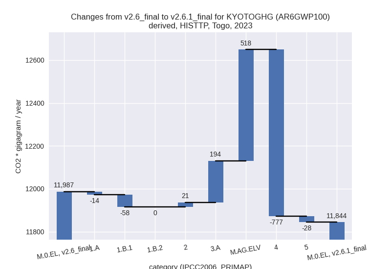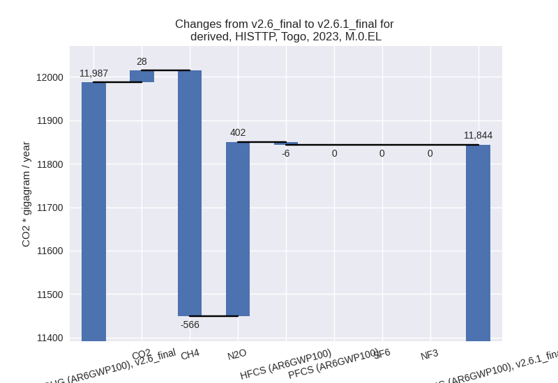
1990-2023
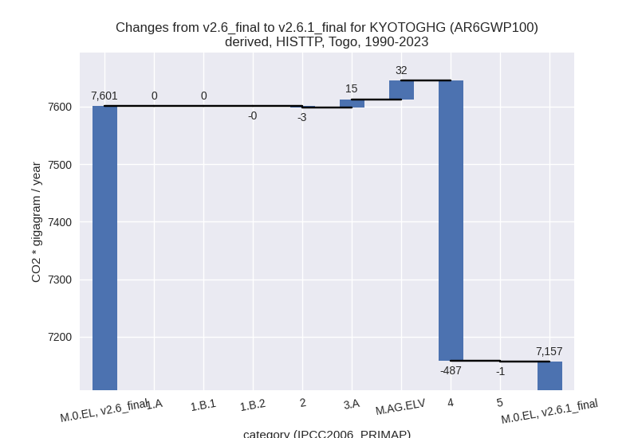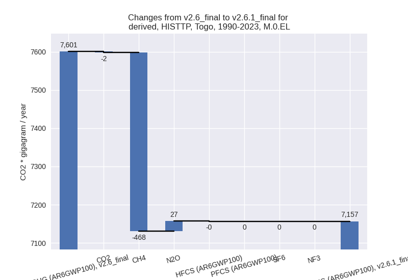
Detailed changes for the scenarios:
country reported scenario (HISTCR):
Most important changes per time frame
For 2023 the following sector-gas combinations have the highest absolute impact on national total KyotoGHG (AR6GWP100) emissions in 2023 (top 5):
- 1: M.AG.ELV, N2O with 4857.22 Gg CO2 / year (31.4%)
- 2: M.AG.ELV, CH4 with 365.07 Gg CO2 / year (23.6%)
- 3: 2, CO2 with 327.11 Gg CO2 / year (23.9%)
- 4: 3.A, CH4 with 199.29 Gg CO2 / year (13.1%)
- 5: 1.B.1, CH4 with -57.04 Gg CO2 / year (-2.4%)
For 1990-2023 the following sector-gas combinations have the highest absolute impact on national total KyotoGHG (AR6GWP100) emissions in 1990-2023 (top 5):
- 1: M.AG.ELV, N2O with 300.71 Gg CO2 / year (5.1%)
- 2: 2, CO2 with 48.98 Gg CO2 / year (7.2%)
- 3: M.AG.ELV, CH4 with 24.67 Gg CO2 / year (4.0%)
- 4: 3.A, CH4 with 14.89 Gg CO2 / year (1.6%)
- 5: 5, N2O with -1.19 Gg CO2 / year (-1.0%)
Changes in the main sectors for aggregate KyotoGHG (AR6GWP100) are
- 1: Total sectoral emissions in 2022 are 5877.28 Gg CO2 / year which is 18.3% of M.0.EL emissions. 2023 Emissions have changed by -1.3% (-75.96 Gg CO2 / year). 1990-2023 Emissions have changed by 0.0% (0.35 Gg CO2 / year).
- 2: Total sectoral emissions in 2022 are 2515.86 Gg
CO2 / year which is 7.8% of M.0.EL emissions. 2023 Emissions have
changed by 14.2% (320.64 Gg CO2 /
year). 1990-2023 Emissions have changed by 5.0% (48.52 Gg CO2 / year). For 2023 the
changes per gas
are:
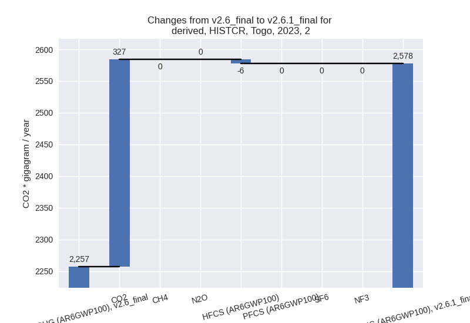
For 1990-2023 the changes per gas are:
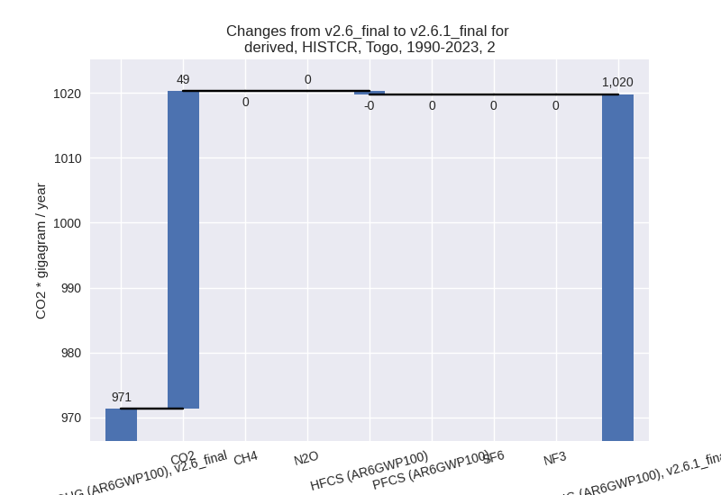 - M.AG: Total sectoral emissions in 2022 are 23135.24
Gg CO2 / year which is 72.0% of M.0.EL emissions. 2023 Emissions have
changed by 28.9% (5419.10 Gg CO2 /
year). 1990-2023 Emissions have changed by 4.5% (340.09 Gg CO2 / year). For 2023 the
changes per gas
are:
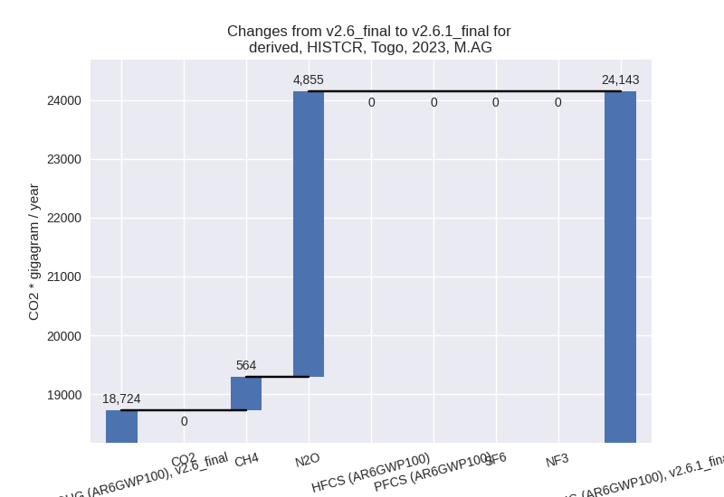
For 1990-2023 the changes per gas are:
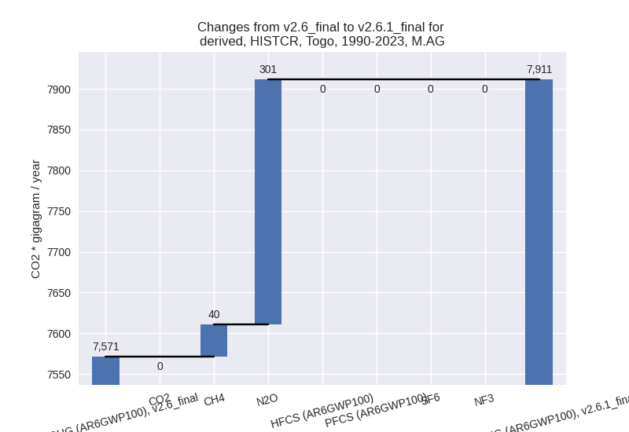
The changes come from the following subsectors:- 3.A: Total sectoral emissions in 2022 are 1801.27
Gg CO2 / year which is 7.8% of category M.AG emissions. 2023 Emissions
have changed by 11.7% (196.82 Gg CO2
/ year). 1990-2023 Emissions have changed by 1.4% (14.72 Gg CO2 / year). For 2023 the
changes per gas
are:
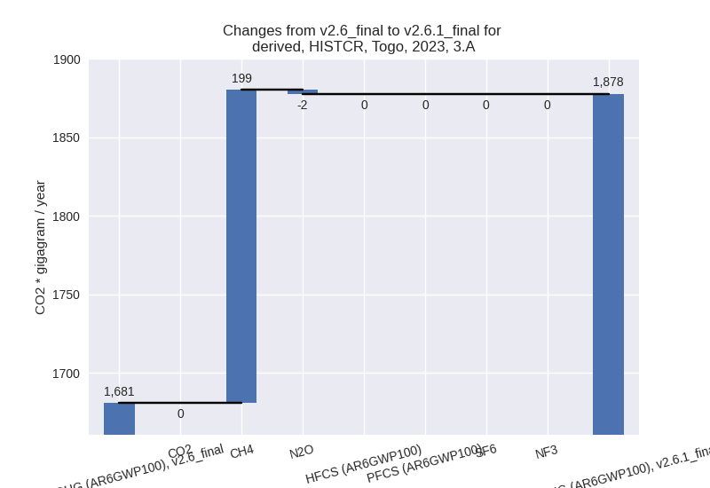
There is no subsector information available in PRIMAP-hist. - M.AG.ELV: Total sectoral emissions in 2022 are
21333.97 Gg CO2 / year which is 92.2% of category M.AG emissions. 2023
Emissions have changed by 30.6%
(5222.28 Gg CO2 / year). 1990-2023 Emissions have changed by 5.0% (325.38 Gg CO2 / year). For 2023 the
changes per gas
are:

For 1990-2023 the changes per gas are:
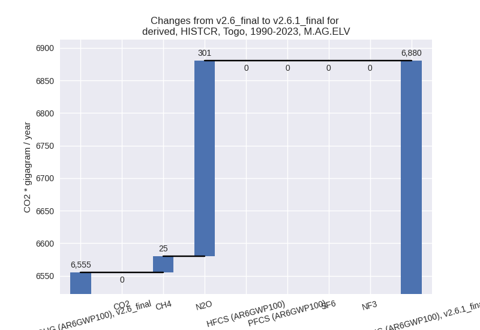
There is no subsector information available in PRIMAP-hist.
- 3.A: Total sectoral emissions in 2022 are 1801.27
Gg CO2 / year which is 7.8% of category M.AG emissions. 2023 Emissions
have changed by 11.7% (196.82 Gg CO2
/ year). 1990-2023 Emissions have changed by 1.4% (14.72 Gg CO2 / year). For 2023 the
changes per gas
are:
- 4: Total sectoral emissions in 2022 are 441.65 Gg CO2 / year which is 1.4% of M.0.EL emissions. 2023 Emissions have changed by 0.5% (2.31 Gg CO2 / year). 1990-2023 Emissions have changed by 0.3% (0.69 Gg CO2 / year).
- 5: Total sectoral emissions in 2022 are 163.62 Gg
CO2 / year which is 0.5% of M.0.EL emissions. 2023 Emissions have
changed by -17.0% (-28.41 Gg CO2 /
year). 1990-2023 Emissions have changed by -1.0% (-1.19 Gg CO2 / year). For 2023 the
changes per gas
are:
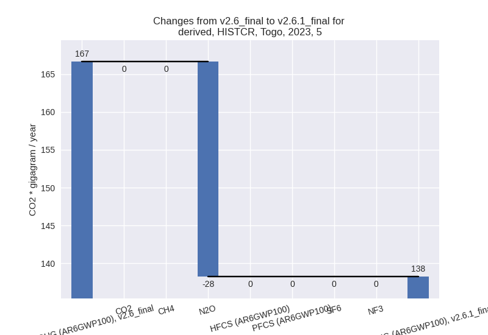
third party scenario (HISTTP):
Most important changes per time frame
For 2023 the following sector-gas combinations have the highest absolute impact on national total KyotoGHG (AR6GWP100) emissions in 2023 (top 5):
- 1: 4, CH4 with -777.95 Gg CO2 / year (-46.9%)
- 2: M.AG.ELV, N2O with 433.78 Gg CO2 / year (32.5%)
- 3: 3.A, CH4 with 196.52 Gg CO2 / year (13.1%)
- 4: M.AG.ELV, CH4 with 84.64 Gg CO2 / year (23.6%)
- 5: 1.B.1, CH4 with -57.04 Gg CO2 / year (-2.4%)
For 1990-2023 the following sector-gas combinations have the highest absolute impact on national total KyotoGHG (AR6GWP100) emissions in 1990-2023 (top 5):
- 1: 4, CH4 with -487.65 Gg CO2 / year (-46.5%)
- 2: M.AG.ELV, N2O with 27.76 Gg CO2 / year (2.7%)
- 3: 3.A, CH4 with 14.69 Gg CO2 / year (1.6%)
- 4: M.AG.ELV, CH4 with 4.54 Gg CO2 / year (1.1%)
- 5: 2, CO2 with -2.07 Gg CO2 / year (-0.3%)
Changes in the main sectors for aggregate KyotoGHG (AR6GWP100) are
- 1: Total sectoral emissions in 2022 are 4873.25 Gg CO2 / year which is 41.7% of M.0.EL emissions. 2023 Emissions have changed by -1.5% (-71.54 Gg CO2 / year). 1990-2023 Emissions have changed by 0.0% (0.26 Gg CO2 / year).
- 2: Total sectoral emissions in 2022 are 1787.25 Gg CO2 / year which is 15.3% of M.0.EL emissions. 2023 Emissions have changed by 1.2% (21.09 Gg CO2 / year). 1990-2023 Emissions have changed by -0.3% (-2.53 Gg CO2 / year).
- M.AG: Total sectoral emissions in 2022 are 3905.55
Gg CO2 / year which is 33.4% of M.0.EL emissions. 2023 Emissions have
changed by 21.3% (712.63 Gg CO2 /
year). 1990-2023 Emissions have changed by 1.9% (46.83 Gg CO2 / year). For 2023 the
changes per gas
are:
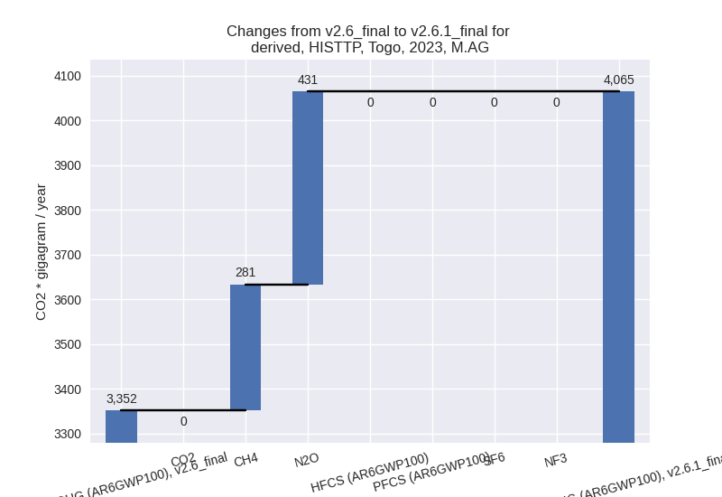
The changes come from the following subsectors:- 3.A: Total sectoral emissions in 2022 are 1769.02
Gg CO2 / year which is 45.3% of category M.AG emissions. 2023 Emissions
have changed by 11.8% (194.20 Gg CO2
/ year). 1990-2023 Emissions have changed by 1.4% (14.52 Gg CO2 / year). For 2023 the
changes per gas
are:
There is no subsector information available in PRIMAP-hist. - M.AG.ELV: Total sectoral emissions in 2022 are
2136.53 Gg CO2 / year which is 54.7% of category M.AG emissions. 2023
Emissions have changed by 30.5%
(518.43 Gg CO2 / year). 1990-2023 Emissions have changed by 2.3% (32.31 Gg CO2 / year). For 2023 the
changes per gas
are:
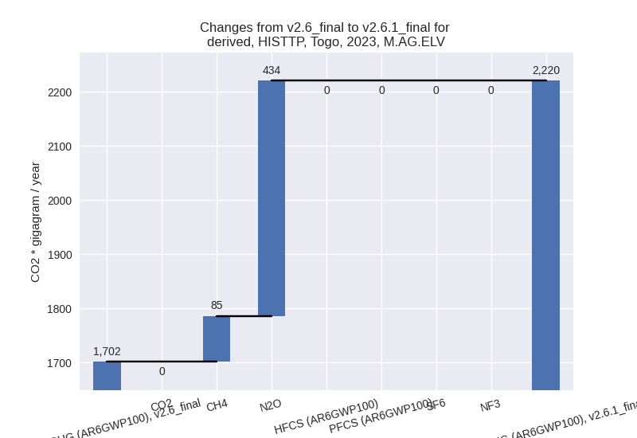
For 1990-2023 the changes per gas are:
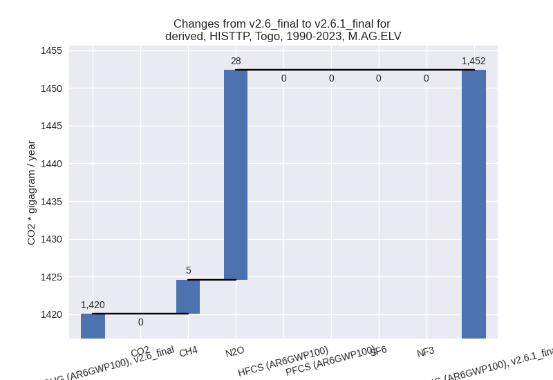
There is no subsector information available in PRIMAP-hist.
- 3.A: Total sectoral emissions in 2022 are 1769.02
Gg CO2 / year which is 45.3% of category M.AG emissions. 2023 Emissions
have changed by 11.8% (194.20 Gg CO2
/ year). 1990-2023 Emissions have changed by 1.4% (14.52 Gg CO2 / year). For 2023 the
changes per gas
are:
- 4: Total sectoral emissions in 2022 are 948.97 Gg
CO2 / year which is 8.1% of M.0.EL emissions. 2023 Emissions have
changed by -44.3% (-776.75 Gg CO2 /
year). 1990-2023 Emissions have changed by -44.1% (-487.41 Gg CO2 / year). For 2023
the changes per gas
are:
For 1990-2023 the changes per gas are:
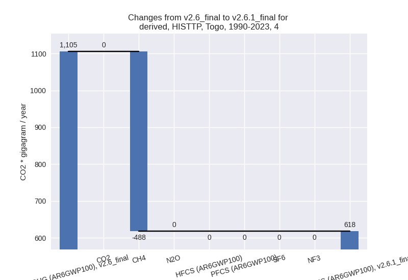 - 5: Total sectoral emissions in 2022 are 163.62 Gg
CO2 / year which is 1.4% of M.0.EL emissions. 2023 Emissions have
changed by -17.0% (-28.41 Gg CO2 /
year). 1990-2023 Emissions have changed by -1.0% (-1.19 Gg CO2 / year). For 2023 the
changes per gas
are: